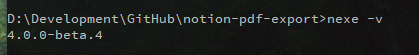

In Notion, place all the pages you wish to export into one page and click
Export, choose ‘HTML’ and ensure ‘Include Subpages’ is on.
Extract the export to find a list of HTML files and folders for each page. Place the HTML files with folders
containing images in the same folder as ‘notion-pdf-export.exe’ (Windows) or
‘notion-pdf-export’ (Mac).
Double Click ‘notion-pdf-export.exe’ (Windows) or ‘notion-pdf-export’ (Mac) and wait
for the process to be completed.
If nothing happens, you may need to go to macOS security settings and click 'Open Anyway'.
All the individual pages can be found converted into PDF Documents inside the pdfs folder.
Building
Running the Project on Node
Clone/Download the project and run the command in the project root directory:
npm install
Run this command to run the script:
node index.js
Compiling an Executable
This is tricky. A lot of adjustments had to be made so that it can run without node.
Installing nexe
Executables are compiled with a very specific version of
nexe that allows access to the filesystem, which has a tricky setup procedure.
To Install Automatically:
Run install_nexe_win.bat as admin on Windows, will take about 5 minutes to
install fully.
Or
Run install_nexe_mac on Mac, will take about 5 minutes to install, and you will
need to enter password. This sometimes doesn’t seem to work properly, so might be worth doing manual install
if there’s problems.
To Install Manually:
Firstly, install the general nexe globally with the
command:
npm install -g nexe
In Windows with Command Prompt running as Admin. Or:
sudo npm install -g nexe
In Mac in the terminal
In the project root folder build some executables with this version of nexe to download node binaries for
Windows and Mac:
In Windows with Command Prompt running as Admin. Or:
sudo npm install -g cspotcode/nexe#19a5046
Now we should have the correct version of nexe for building.
Confirm by running:
nexe -v

Check that the version is 4.0.0-beta.4
Compiling Executables
Compile Automatically
Run build_win32.bat on Windows to build a Windows Executable. This can be found
in /dist/win32 and everything in that folder must be distributed together.
Run build_macos on Mac to build a Mac Executable. This can be found in
/dist/macos and everything in that folder must be distributed together.
If you wish to compile for Mac on Windows or Vice Versa, you can do so using the manual method below. This is
trickier and will require obtaining a phantomjs binary built for the desired platform and placing it in the
correct place.
in the root directory of the project. Note that this is built under the name ‘npe’ which is done for a
reason.
To distribute the Windows Executable, place it in a directory with the following:
The original ‘utils’ folder from the source code
To distribute the Mac Executable (npe), place it in a directorywith the following:
The original ‘utils’ folder from the source code
An executable unix shell script with the following contents, called ‘notion-pdf-export’:
#/bin/bash
cd "$0"/..
./npe
This can be obtained from ‘mac_script.sh’ or found inside /dist/macos
Credits
wkhtmltopdf
This project uses wkhtmltopdf for the conversions. This brilliant tool was created by Jakob Truelsen and is now maintained by Ashish Kulkarni. Version 0.12.6 has been used, and can be downloaded here.
wkhtmltopdf is released under the LGPL-3.0 License which can be found at utils/wkhtmltopdf/LICENSE.
The source code is available at the wkhtmltopdf
repository.